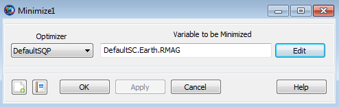

Minimize
Minimize — Define the cost function to minimize
Script Syntax
MinimizeOptimizerName(ObjectiveFunction)
Description
The Minimize command is used within an Optimize/EndOptimize Optimization sequence to define the objective function that you want to minimize.
See Also: Vary, NonlinearConstraint, Optimize
Options
| Option | Description | ||||||||||
|---|---|---|---|---|---|---|---|---|---|---|---|
| ObjectiveFunction | Specifies the objective function that the optimizer will try to minimize.
| ||||||||||
| OptimizerName | Specifies which optimizer to use to minimize the cost function
|
GUI
You use a Minimize command, within an Optimize/EndOptimize Optimization sequence as shown below, to define a cost function that you wish to minimize.
 |
Double click on Minimize1 to bring up the Minimize command dialog box shown below..
|  |
You must provide two inputs for the Minimize command dialog box above:
Choice of optimizer.
Object (and associated variable) to be minimized. You can input an object directly or you can click the Edit button to the right of this field to select the type of object from three possible choices, Spacecraft, Variable, or Array.
Remarks
Number of Vary, NonlinearConstraint, and Minimize Commands Within an Optimization Sequence
An Optimization sequence must contain one or more Vary commands. Vary commands must occur before any Minimize or NonlinearConstraint commands.
At most, a single Minimize command is allowed within an optimization sequence.
It is possible for an Optimize/EndOptimize optimization sequence to contain no Minimize commands. In this case, since every optimization sequence must contain (a) one or more NonlinearConstraint commands and/or (b) a single Minimize command, the optimization sequence must contain at least one NonlinearConstraint command.
Command Interactions
The Minimize command is only used within an Optimize/EndOptimize Optimization sequence. See the Optimize command documentation for a complete worked example using the Minimize command.
| Vary command | Every Optimization sequence must contain at least one Vary command. Vary commands are used to define the control variables associated with an Optimization sequence. |
| NonlinearConstraint command | NonlinearConstraint commands are used to define the constraints (i.e., goals) associated with an Optimization sequence. Note that multiple NonlinearConstraint commands are allowed within an Optimization sequence. |
| Optimize command | A Minimize command can only occur within an Optimize/EndOptimize command sequence. |
Examples
% Minimize the eccentricity of Sat, using SQP1
Minimize SQP1(Sat.ECC)
% Minimize the Variable DeltaV, using SQP1
Minimize SQP1(DeltaV)
% Minimize the first component of MyArray, using VF13ad1
Minimize VF13ad1(MyArray(1,1)) As mentioned above, the Minimize command only occurs within an Optimize sequence. See the Optimize command help for complete examples showing the use of the Minimize command.